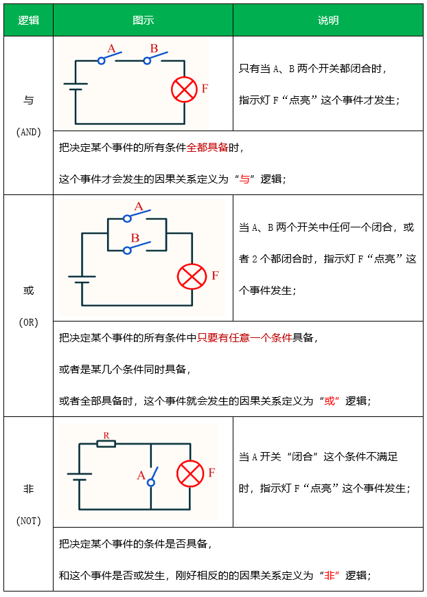

<!DOCTYPE lake>
<h1 data-lake-id="hVwHt" id="hVwHt"><span data-lake-id="u6f24cecc" id="u6f24cecc">0&gt; 什么是逻辑？</span></h1><p data-lake-id="u185ce034" id="u185ce034"><span data-lake-id="u18e513e4" id="u18e513e4">逻辑就是"因为...所以..."的可靠推理关系。</span></p><p data-lake-id="u1c393175" id="u1c393175"><span data-lake-id="u3f5c5d84" id="u3f5c5d84">例如：</span></p><ul list="u9405675a"><li data-lake-id="u3872f079" fid="u9c49065b" id="u3872f079"><span data-lake-id="u1e5075ca" id="u1e5075ca">因为没浇水（条件），所以花枯了（结果）</span></li><li data-lake-id="u0970b0d6" fid="u9c49065b" id="u0970b0d6"><span data-lake-id="u7c5efaed" id="u7c5efaed">如果熬夜（条件），那么会困（结果）</span></li></ul><hr/><h1 data-lake-id="DhwKq" id="DhwKq"><span data-lake-id="u939d808b" id="u939d808b">1&gt; 3种逻辑运算</span></h1><p data-lake-id="uc3314baf" id="uc3314baf"><span data-lake-id="ubd6f7d98" id="ubd6f7d98">在C语言中，三种基本逻辑运算符就能表达所有逻辑关系（人类的智慧</span><span data-lake-id="u84ee70ad" id="u84ee70ad">😇</span><span data-lake-id="u9f0e0ef7" id="u9f0e0ef7">）</span></p><p data-lake-id="u8b204e68" id="u8b204e68"><span data-lake-id="ue4a9e169" id="ue4a9e169">&amp;&amp;（逻辑与）：两个条件都成立，结果才成立</span></p><p data-lake-id="u94bb420f" id="u94bb420f"><span data-lake-id="u4ccdf4c4" id="u4ccdf4c4">||（逻辑或）：至少一个条件成立， 结果就成立</span></p><p data-lake-id="u4fbd45d4" id="u4fbd45d4"><span data-lake-id="u7d77a856" id="u7d77a856">!（逻辑非）：条件不成立，结果成立</span></p><p data-lake-id="ue668bab7" id="ue668bab7"></p><hr/><h2 data-lake-id="fb81P" id="fb81P"><span data-lake-id="u33dfaff7" id="u33dfaff7">1.1&gt; 验证逻辑(&amp;&amp;)</span></h2><span class="yuque-card-unsupported">[codeblock]</span><table class="lake-table" data-lake-id="Ljm6l" id="Ljm6l" margin="true" style="width: 750px" width-mode="contain"><colgroup><col width="187"/><col width="187"/><col width="187"/><col width="189"/></colgroup><tbody><tr data-lake-id="uc01b815b" id="uc01b815b"><td data-lake-id="u701d6764" id="u701d6764" style="background-color: #F5D480"><p data-lake-id="u3ae11cd5" id="u3ae11cd5" style="text-align: center"><span data-lake-id="u77559c6b" id="u77559c6b">A-开关</span></p></td><td data-lake-id="u801d2c22" id="u801d2c22" style="background-color: #F5D480"><p data-lake-id="u9f31ed22" id="u9f31ed22" style="text-align: center"><span data-lake-id="uc6b74469" id="uc6b74469">B-开关</span></p></td><td data-lake-id="u48f9233c" id="u48f9233c" style="background-color: #F5D480"><p data-lake-id="ufacecdfb" id="ufacecdfb" style="text-align: center"><span data-lake-id="u0bcaf5b0" id="u0bcaf5b0">灯泡F</span></p></td><td data-lake-id="u5e4d2df2" id="u5e4d2df2" style="background-color: #F5D480"><p data-lake-id="u0737ecb0" id="u0737ecb0" style="text-align: center"><span data-lake-id="u41f4536a" id="u41f4536a">代码</span></p></td></tr><tr data-lake-id="u3e346537" id="u3e346537"><td data-lake-id="u20fdca9e" id="u20fdca9e"><p data-lake-id="u04accb61" id="u04accb61" style="text-align: center"><span data-lake-id="uce707253" id="uce707253">断开（0）</span></p></td><td data-lake-id="ud7262043" id="ud7262043"><p data-lake-id="uc75172b8" id="uc75172b8" style="text-align: center"><span data-lake-id="ud9951ac0" id="ud9951ac0">断开（0）</span></p></td><td data-lake-id="ud5c1407c" id="ud5c1407c"><p data-lake-id="u778880c6" id="u778880c6" style="text-align: center"><span data-lake-id="u874992f0" id="u874992f0">灭（0）</span></p></td><td data-lake-id="ufdea929e" id="ufdea929e"><p data-lake-id="u4f2af1a2" id="u4f2af1a2" style="text-align: center"><span data-lake-id="ude62ba26" id="ude62ba26">0 &amp;&amp; 0  = 0</span></p></td></tr><tr data-lake-id="ub953114f" id="ub953114f"><td data-lake-id="u9143243a" id="u9143243a"><p data-lake-id="u5f3af61e" id="u5f3af61e" style="text-align: center"><span data-lake-id="u756c52ce" id="u756c52ce">断开（0）</span></p></td><td data-lake-id="u62a5c6f0" id="u62a5c6f0"><p data-lake-id="u84b1e1a0" id="u84b1e1a0" style="text-align: center"><strong><span data-lake-id="u3a9614c1" id="u3a9614c1" style="color: #5C8D07">闭合（1）</span></strong></p></td><td data-lake-id="ua639c853" id="ua639c853"><p data-lake-id="uff8fb089" id="uff8fb089" style="text-align: center"><span data-lake-id="ud64a7eec" id="ud64a7eec">灭（0）</span></p></td><td data-lake-id="u7515f390" id="u7515f390"><p data-lake-id="u650b752f" id="u650b752f" style="text-align: center"><span data-lake-id="u14d75db8" id="u14d75db8">0 &amp;&amp; 1  = 0</span></p></td></tr><tr data-lake-id="u3a284a31" id="u3a284a31"><td data-lake-id="u228460e8" id="u228460e8"><p data-lake-id="u96f900ce" id="u96f900ce" style="text-align: center"><strong><span data-lake-id="u706a28f2" id="u706a28f2" style="color: #5C8D07">闭合（1）</span></strong></p></td><td data-lake-id="u9c3c7320" id="u9c3c7320"><p data-lake-id="u331d5ae6" id="u331d5ae6" style="text-align: center"><span data-lake-id="uc652f585" id="uc652f585">断开（0）</span></p></td><td data-lake-id="ud360523c" id="ud360523c"><p data-lake-id="ua29fabbc" id="ua29fabbc" style="text-align: center"><span data-lake-id="uf24dea64" id="uf24dea64">灭（0）</span></p></td><td data-lake-id="uf82da2d1" id="uf82da2d1"><p data-lake-id="u7a604751" id="u7a604751" style="text-align: center"><span data-lake-id="u2a0f6f1b" id="u2a0f6f1b">1 &amp;&amp; 0  = 0</span></p></td></tr><tr data-lake-id="uee034132" id="uee034132" style="height: 36px"><td data-lake-id="u9da8acf1" id="u9da8acf1"><p data-lake-id="u3aeca741" id="u3aeca741" style="text-align: center"><strong><span data-lake-id="u809fc371" id="u809fc371" style="color: #5C8D07">闭合（1）</span></strong></p></td><td data-lake-id="u16b0726f" id="u16b0726f"><p data-lake-id="uc55ea5be" id="uc55ea5be" style="text-align: center"><strong><span data-lake-id="u629baa48" id="u629baa48" style="color: #5C8D07">闭合（1）</span></strong></p></td><td data-lake-id="uf7d21456" id="uf7d21456"><p data-lake-id="u90be2ec8" id="u90be2ec8" style="text-align: center"><span data-lake-id="ube929ff0" id="ube929ff0">亮（1）</span></p></td><td data-lake-id="u0aad4f00" id="u0aad4f00"><p data-lake-id="u617c8d9d" id="u617c8d9d" style="text-align: center"><span data-lake-id="u5bdf11d7" id="u5bdf11d7">1 &amp;&amp; 1 = 1</span></p></td></tr></tbody></table><hr/><h2 data-lake-id="LKedz" id="LKedz"><span data-lake-id="uf43ffae5" id="uf43ffae5">1.2&gt; 验证逻辑(||)</span></h2><span class="yuque-card-unsupported">[codeblock]</span><table class="lake-table" data-lake-id="AFsQz" id="AFsQz" margin="true" style="width: 750px" width-mode="contain"><colgroup><col width="187"/><col width="187"/><col width="187"/><col width="189"/></colgroup><tbody><tr data-lake-id="u4e32c1b5" id="u4e32c1b5"><td data-lake-id="u04666f37" id="u04666f37" style="background-color: #F5D480"><p data-lake-id="ue0635b09" id="ue0635b09" style="text-align: center"><span data-lake-id="udba85614" id="udba85614">A-开关</span></p></td><td data-lake-id="u333213ee" id="u333213ee" style="background-color: #F5D480"><p data-lake-id="u67161b6b" id="u67161b6b" style="text-align: center"><span data-lake-id="ubcf6a18a" id="ubcf6a18a">B-开关</span></p></td><td data-lake-id="ucb770802" id="ucb770802" style="background-color: #F5D480"><p data-lake-id="u2fc68b60" id="u2fc68b60" style="text-align: center"><span data-lake-id="uecc4b698" id="uecc4b698">灯泡F</span></p></td><td data-lake-id="uade6be33" id="uade6be33" style="background-color: #F5D480"><p data-lake-id="ua253ab29" id="ua253ab29" style="text-align: center"><span data-lake-id="ub6dd60af" id="ub6dd60af">代码</span></p></td></tr><tr data-lake-id="uda15eb42" id="uda15eb42"><td data-lake-id="u1782eda7" id="u1782eda7"><p data-lake-id="ub67e548f" id="ub67e548f" style="text-align: center"><span data-lake-id="u60890e14" id="u60890e14">断开（0）</span></p></td><td data-lake-id="u867b1f8b" id="u867b1f8b"><p data-lake-id="u55bfba25" id="u55bfba25" style="text-align: center"><span data-lake-id="u7be6b9f7" id="u7be6b9f7">断开（0）</span></p></td><td data-lake-id="u315ac333" id="u315ac333"><p data-lake-id="ue675f262" id="ue675f262" style="text-align: center"><span data-lake-id="u021ad95e" id="u021ad95e">灭（0）</span></p></td><td data-lake-id="uec1b0f0b" id="uec1b0f0b"><p data-lake-id="ub9d57061" id="ub9d57061" style="text-align: center"><span data-lake-id="u9126ebd8" id="u9126ebd8">0 || 0  = 0</span></p></td></tr><tr data-lake-id="u0ebfecf7" id="u0ebfecf7"><td data-lake-id="u6e55e7bc" id="u6e55e7bc"><p data-lake-id="ud1215ed1" id="ud1215ed1" style="text-align: center"><span data-lake-id="u4fea83c6" id="u4fea83c6">断开（0）</span></p></td><td data-lake-id="u1fd8921c" id="u1fd8921c"><p data-lake-id="u8dcd7134" id="u8dcd7134" style="text-align: center"><strong><span data-lake-id="u02fe1240" id="u02fe1240" style="color: #5C8D07">闭合（1）</span></strong></p></td><td data-lake-id="u4546b6c3" id="u4546b6c3"><p data-lake-id="u99977b46" id="u99977b46" style="text-align: center"><span data-lake-id="u8d57b193" id="u8d57b193">亮（1）</span></p></td><td data-lake-id="ua6f2d0a3" id="ua6f2d0a3"><p data-lake-id="uc0d60f2a" id="uc0d60f2a" style="text-align: center"><span data-lake-id="ubb83839d" id="ubb83839d">0 || 1  = 1</span></p></td></tr><tr data-lake-id="u87ed7a86" id="u87ed7a86"><td data-lake-id="ub574e80a" id="ub574e80a"><p data-lake-id="u87c8dd03" id="u87c8dd03" style="text-align: center"><strong><span data-lake-id="u9a9611b8" id="u9a9611b8" style="color: #5C8D07">闭合（1）</span></strong></p></td><td data-lake-id="u881d5a12" id="u881d5a12"><p data-lake-id="u43fae968" id="u43fae968" style="text-align: center"><span data-lake-id="u7d6f3a4a" id="u7d6f3a4a">断开（0）</span></p></td><td data-lake-id="u20aa9372" id="u20aa9372"><p data-lake-id="u20070081" id="u20070081" style="text-align: center"><span data-lake-id="u5e253349" id="u5e253349">亮（1）</span></p></td><td data-lake-id="u30d0f832" id="u30d0f832"><p data-lake-id="ub319e5ef" id="ub319e5ef" style="text-align: center"><span data-lake-id="u33b5a961" id="u33b5a961">1 || 0  = 1</span></p></td></tr><tr data-lake-id="u5a5eafcb" id="u5a5eafcb" style="height: 36px"><td data-lake-id="uc494b851" id="uc494b851"><p data-lake-id="u086334d5" id="u086334d5" style="text-align: center"><strong><span data-lake-id="u6736e564" id="u6736e564" style="color: #5C8D07">闭合（1）</span></strong></p></td><td data-lake-id="u1ae01fd6" id="u1ae01fd6"><p data-lake-id="u505f1543" id="u505f1543" style="text-align: center"><strong><span data-lake-id="u409cdb78" id="u409cdb78" style="color: #5C8D07">闭合（1）</span></strong></p></td><td data-lake-id="u5108d222" id="u5108d222"><p data-lake-id="u80dc8aa2" id="u80dc8aa2" style="text-align: center"><span data-lake-id="ubf41092b" id="ubf41092b">亮（1）</span></p></td><td data-lake-id="uf6bb89bc" id="uf6bb89bc"><p data-lake-id="uaaa6d061" id="uaaa6d061" style="text-align: center"><span data-lake-id="u6c8e11fe" id="u6c8e11fe">1 || 1 = 1</span></p></td></tr></tbody></table><p data-lake-id="ud7d1ad50" id="ud7d1ad50"><br/></p><hr/><h2 data-lake-id="UQFz7" id="UQFz7"><span data-lake-id="u82be9c0d" id="u82be9c0d">1.3&gt; 验证逻辑(!)</span></h2><span class="yuque-card-unsupported">[codeblock]</span><table class="lake-table" data-lake-id="YSTPo" id="YSTPo" margin="true" style="width: 563px" width-mode="contain"><colgroup><col width="187"/><col width="187"/><col width="189"/></colgroup><tbody><tr data-lake-id="u673760ef" id="u673760ef"><td data-lake-id="u857734b3" id="u857734b3" style="background-color: #F5D480"><p data-lake-id="u2af91362" id="u2af91362" style="text-align: center"><span data-lake-id="ue81f4a22" id="ue81f4a22">A-开关</span></p></td><td data-lake-id="u496c2fa0" id="u496c2fa0" style="background-color: #F5D480"><p data-lake-id="u3d66b29d" id="u3d66b29d" style="text-align: center"><span data-lake-id="u4108148d" id="u4108148d">灯泡F</span></p></td><td data-lake-id="u5954bc0a" id="u5954bc0a" style="background-color: #F5D480"><p data-lake-id="u734ec52b" id="u734ec52b" style="text-align: center"><span data-lake-id="uebeb0e45" id="uebeb0e45">代码</span></p></td></tr><tr data-lake-id="uca4900fa" id="uca4900fa"><td data-lake-id="u0fed4bc4" id="u0fed4bc4"><p data-lake-id="ue2e130f2" id="ue2e130f2" style="text-align: center"><span data-lake-id="u09bf7f7a" id="u09bf7f7a">断开（0）</span></p></td><td data-lake-id="u9114b43f" id="u9114b43f"><p data-lake-id="uec7fd3d1" id="uec7fd3d1" style="text-align: center"><span data-lake-id="u6ebd4b7d" id="u6ebd4b7d">亮（1）</span></p></td><td data-lake-id="u815a0b07" id="u815a0b07"><p data-lake-id="u010a01f9" id="u010a01f9" style="text-align: center"><span data-lake-id="uec476367" id="uec476367">!0  = 1</span></p></td></tr><tr data-lake-id="u7b18405f" id="u7b18405f"><td data-lake-id="u01be4522" id="u01be4522"><p data-lake-id="u390b7f44" id="u390b7f44" style="text-align: center"><strong><span data-lake-id="u957a6e4e" id="u957a6e4e" style="color: #5C8D07">闭合（1）</span></strong></p></td><td data-lake-id="u8a0bcafb" id="u8a0bcafb"><p data-lake-id="uc5d78299" id="uc5d78299" style="text-align: center"><span data-lake-id="u0e7db802" id="u0e7db802">灭（0）</span></p></td><td data-lake-id="u55d13c29" id="u55d13c29"><p data-lake-id="u42786f80" id="u42786f80" style="text-align: center"><span data-lake-id="uf37bb2f6" id="uf37bb2f6">!1  = 0</span></p></td></tr></tbody></table><hr/><h1 data-lake-id="V3ZRP" id="V3ZRP"><span data-lake-id="u82116e5e" id="u82116e5e">2&gt; 非0即为真</span></h1><p data-lake-id="u43116237" id="u43116237"><span data-lake-id="u563e57f9" id="u563e57f9">任何不等于0的值（包括正数、负数）都被视为"真"（true）</span></p><p data-lake-id="u3edd6d8a" id="u3edd6d8a"><span data-lake-id="u564793f2" id="u564793f2">只有0值被视为"假"（false）</span></p><span class="yuque-card-unsupported">[codeblock]</span><p data-lake-id="uda5d3f61" id="uda5d3f61"><span class="lake-fontsize-12" data-lake-id="u77c630a5" id="u77c630a5" style="color: #000000">✅</span><span class="lake-fontsize-12" data-lake-id="u742926c3" id="u742926c3" style="color: #000000"> 逻辑运算（&amp;&amp;、||、!）和比较运算（&gt;、&lt;、==）的结果只能是 0 或 1，</span></p><p data-lake-id="u63e52772" id="u63e52772"><span class="lake-fontsize-12" data-lake-id="ufd4808ba" id="ufd4808ba" style="color: #000000">      即使操作数本身是其他非零值。</span></p><p data-lake-id="uc9e29116" id="uc9e29116"><span class="lake-fontsize-12" data-lake-id="ucbfb3541" id="ucbfb3541" style="color: #000000">​</span><span class="lake-fontsize-12" data-lake-id="ua6eb7cd4" id="ua6eb7cd4" style="color: #000000">✅</span><span class="lake-fontsize-12" data-lake-id="u058dac75" id="u058dac75" style="color: #000000"> 0 表示假，1 表示真，但参与运算的操作数可以是任意整数值（非0即真）。 </span></p><p data-lake-id="u0b946b5b" id="u0b946b5b"><span class="lake-fontsize-12" data-lake-id="u85c29dc6" id="u85c29dc6" style="color: #000000">✅</span><span class="lake-fontsize-12" data-lake-id="uae894f7c" id="uae894f7c" style="color: #000000"> !（逻辑非）的作用：!x 在 x 为 0 时返回 1，否则返回 0。</span></p><hr/><h1 data-lake-id="sbCKz" id="sbCKz"><span data-lake-id="u5a983be7" id="u5a983be7">🐻</span><span data-lake-id="u56f8ce18" id="u56f8ce18">实践练习：</span></h1><p data-lake-id="uc825bf32" id="uc825bf32"><span data-lake-id="ud2544eec" id="ud2544eec">习题：给定以下变量定义，计算并输出各逻辑表达式的值（结果为 0 或 1）：</span></p><span class="yuque-card-unsupported">[codeblock]</span>